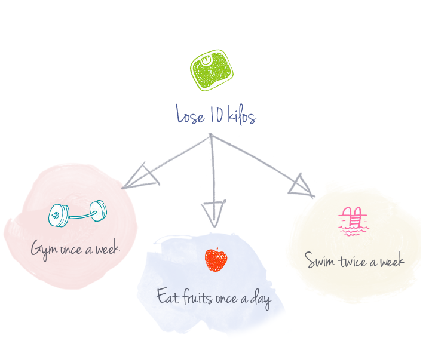
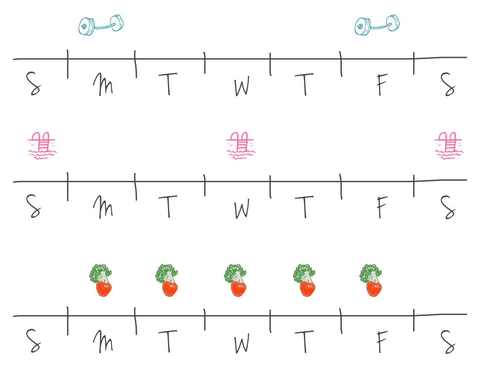
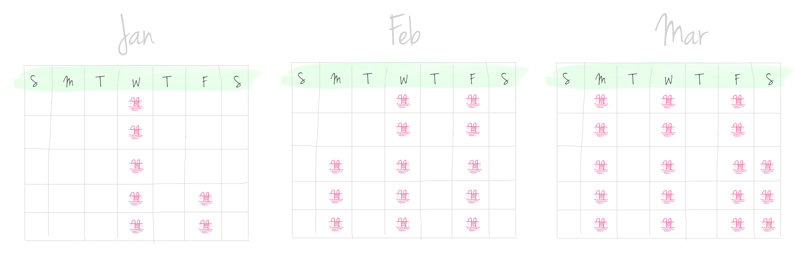

It’s the beginning of the year and you’ve set yourself some goals. This is the year you’re gonna lose weight, hit the gym and get really fit. You’re all excited, and ready to go.
You’ve tried a hundred different health apps. But somehow, it’s just the notification number that keeps growing. Your waistline ain’t dropping.
You don’t want to be lazy, but sometimes it’s just so damn hard!
Eating healthy and exercising don’t need to be a pain in your butt. Wouldn’t it be nice if you could actually look forward to these things?
Wouldn’t it be nice if being healthy was second nature to you?
Setting up reminders, and having thousands of apps doesn’t work because it isn’t solving the fundamental problem:
We are all human, and we would rather do things that are comfortable, easy, and familiar. You’d rather plop on the couch in front of the TV after work than go out for a jog, because that’s what you’re used to.
How do we make it so that it is second nature to reach for the salad rather than a cheeseburger, or going for a workout after work is as normal as checking your mail?
Simple: Change your habits. Well, easier said than done. Your mind and body is resistant to change, and will fight you till you give up.
So is that it? Are you doomed to a life of failure? Well, no, it doesn’t have to be like that.
GoalApp is here to hold your hand in this journey of changing your habits, and becoming a new you. How do we do that?
Don't try to work towards an arbitrary number or goal. Instead, break down the journey into individual tasks that can each be performed.
"Lose 15 kilos" is a todo item that isn't going to be checked off for a while. GoalApp helps you break down goals in to tasks that you can cross out every day.
Overwhelming yourself by scheduling a day full of life-changing tasks is a surefire way to give up ASAP. Take each task and schedule it across the week. You need habits, not a trial by fire.
Each task happens a manageable number of times a week, allowing yourself to get used to the schedule and not get overwhelmed. GoalApp gives you the flexibility to reschedule tasks if you need to, letting you keep that streak going.
Sustainable habits don't come from putting yourself in pain. You can't go from surfing Reddit twice a day to benchpressing twice a day. Patience, grasshopper.
GoalApp lets you slowly amp up your schedule when you're ready.